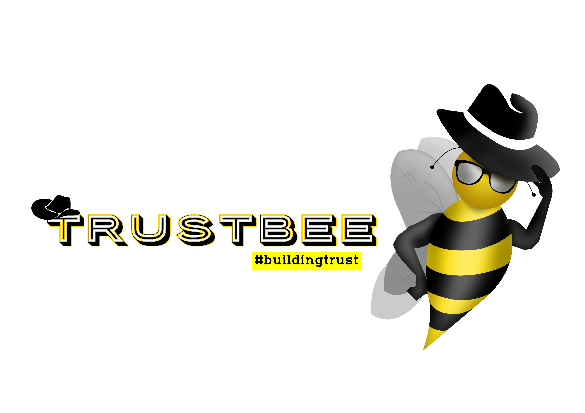

TrustBee
Turn on the sound to hear the explanation 🔊
A Social media web app to connect and build trust with friends and family made with html5,
css, javaScript, and Node JS for the backend.
TrustBee presents a sign up or sign in page that requires you to authenticate yourself.
Just like most social media, the first user flow is the home page where every posts of people you
have trusted and things posted by the actual your is displayed. To post anything, there is a plus
sign at the bottom of the home page that leads you to another page to fill in anything you desire to
post. Every posts presents you with a caption text field, a description text field and place to
insert the url for the post. After post the has successfully communicate with the API, the user is
returned back to the home page where the recent will be displayed instantly.
The new post will show the picture if any, a link to the person the posted it, the time and date posted, the caption and a truncated description if too long to show. Each post has two buttons associated with it. A like button and a comment/view button. The like button instantly increment the amount of likes whiles the comment/view button will take you to actual post where you can read the entire description given if truncated, comment, like, and many more. You can delete any comments or the whole post if you are the owner of the post but other users can only delete their comments.
 Back at the home page, the nav bar has links to the user's profile (with a rounded image which displays the profile picture) messages, friends trusted, and logout. You also see a bell icon that displays an amount of notifications and shows them when clicked. At the messages, you can find users to send messages and pictures to and it will be instantly to their account. User's messages are floated to the left and the receiver's the the right tag with a red and green color respectively.The friends link sends you to a page where all friends are displayed. The page has a search bar to find a particular person. On the same page you can decide to untrust anyone you want and they will instantly be deprived from seeing your posts. But once done you will have to send them a send request to build trust again.
When you click on any user, just like most social media, you are taken to the user's profile where you can see their bio and all posts by that user. When a user clicks on their own profile, just like the latter, see their bio and a profile pic that they can edit. They also see all the posts that they made. You can also delete or deactivate your account.
TrustBee is currently not deployed in the writing of this summary. The functionalities are being improved for a better user experience.